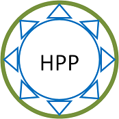

VEGUS 蔬菜原汁特点
新鲜，却不需要冷藏
-
自产鲜榨原汁
VEGUS农庄自己培植西兰花嫩芽、小麦草和胡萝卜，不从任何第三方采购。收获后立刻榨汁和灌装处理。 -

HPP超高压灭菌
先进的HPP超高压灭菌技术，全程低温生产，保留原汁的生鲜口感和丰富营养。 -
室温保存
VEGUS实现了鲜榨果蔬汁室温保存（16周以上），无需低温！不仅降低生产和运输成本，更无需担心运输过程冷链意外中断导致产品变质！
新鲜，却不需要冷藏
| 生产商Vegus Foods Limited 在爱尔兰共和国农业、食物和海产部登记号为HORT 1576；在美国药物和食品管理局（FDA）的食品生产商登记号为16589399150、低酸预包装食品LA/CF生产商登记号为 FCE26370，联系地址：Vegus Foods，Lacken, New Ross, County Wexford, Ireland. 联系电话 00-353-876226849. |
| 广州释子莱菔科技有限公司是Vegus Foods Limited在中国大陆地区和香港、澳门特区的特许代理商， 联系地址：广东省广州市白云区天鸿花园24-26栋104房
营业执照注册号：110108016581054 食品流通许可证编号：SP1101051410304043 |